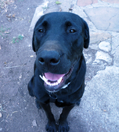
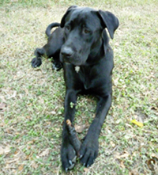

Hi, my name is Kendal and I am the founder and owner of Kendal Quinn's Pet Friends. How did I get started you ask? After graduating college from blahblah University with a blahblah major, I landed a couple different jobs working in blahblah and realized that it just wasn't for me.
During childhood, blahblah blahbljhahah akfjhjhfuw blahhh bahl neighborhood animal lover who would frequently end up bringing home injured or homeless animals to save. People have always told me that I have a unique connection with animals, blah blah something and something else and then end the paragrapg blah.
I have been pet sitting and dog walking since the age of blah, and have always loved working with animals. Starting off with a part-time job blah blah then blah blah, it dawned on me that I could make this my full-time career! I then decided to branch off and start my own company, which is now known as Kendal Quinn's Pet Friends.
Your dog deserves to be intellectually and athletically challenged. You deserve to feel good about Fido’s care. You both deserve to relax at the end of a long day. Kendal Quinn's Pet Friends provide constant recreation, blahblah, emotional stability and, of course, lots and lots and lots of love.

Cats too need bllahh blah blah and as a blah alblbl I can soething thing thin something else sometimre maybe something else and copy this over and over. bllahh blah blah and as a blah alblbl I can soething thing thin something else sometimre maybe something else and copy this over and overbllahh blah blah and as a blah alblbl I can soething thing thin something else sometimre maybe something else and copy this over and over.
I couldn't and still can't believe that I actually get paid to do this.-- "DEf need to reword as I copied and pasted alot of this...but I like the sentiment"-- It never feels like work and I always have fun meeting new pets and getting to know each and every one of their personalities. If you asked me what the hardest part of my job is, I would say that it's when I have to say goodbye to the pets after pet sitting or dog walking because I get so attached!
For more information, to schedule a free initial consultation, or to set up pet sitting and/or dog walking services, please call, e-mail, or simply fill out the form.
Please include what type of pet(s) you have, how many, the type of services you are looking for, and the schedule/dates needed.
Thank you for your interest in Kendal Quinn's Pet Friends. We look forward to hearing from you!
Kendal
(555) 555-5555
kq@email.com